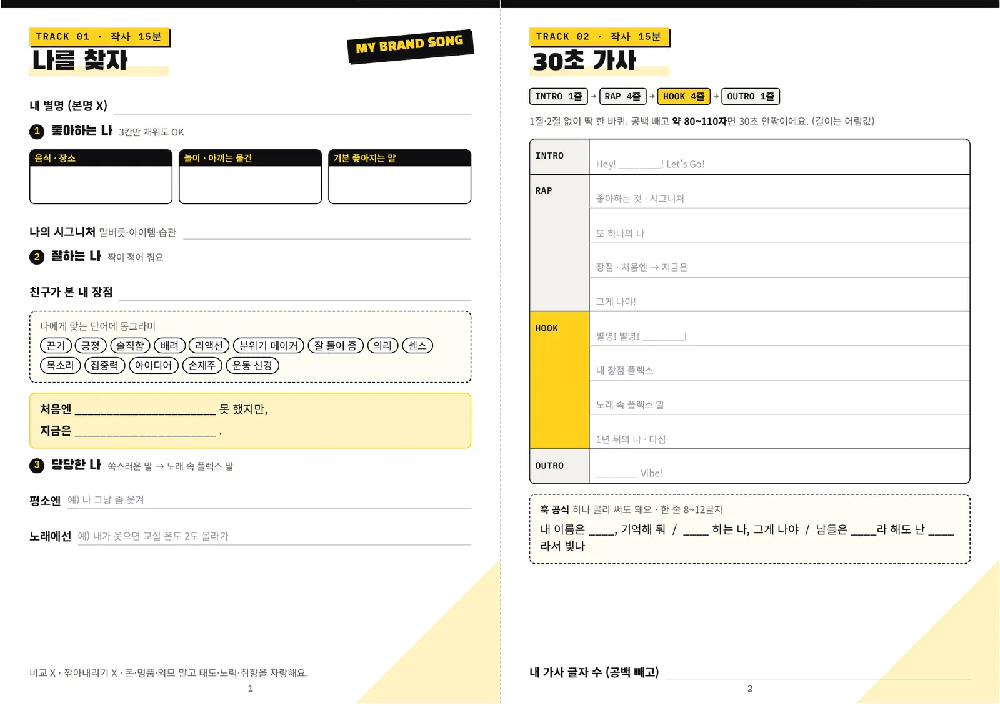
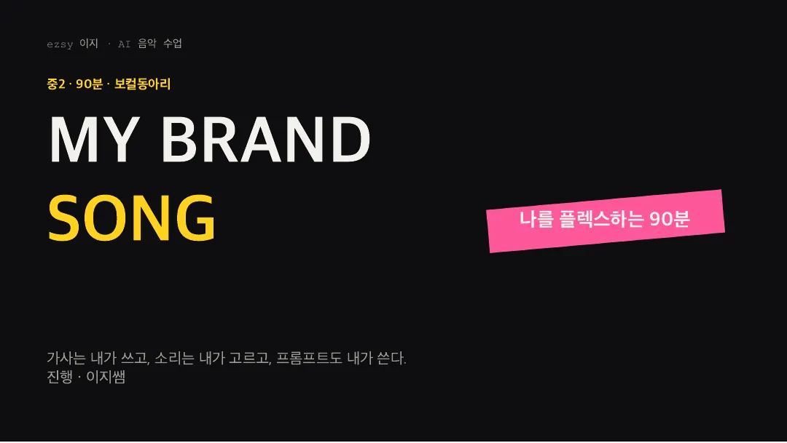
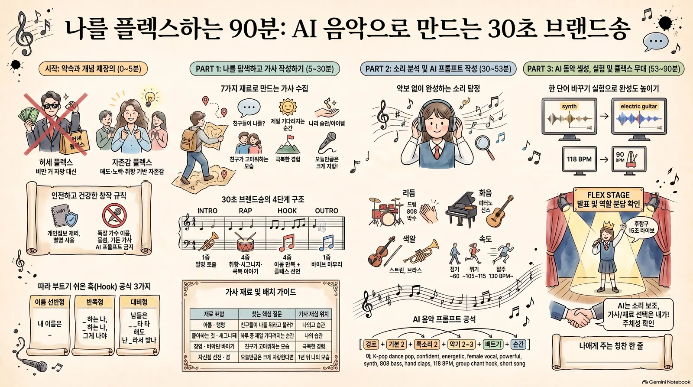
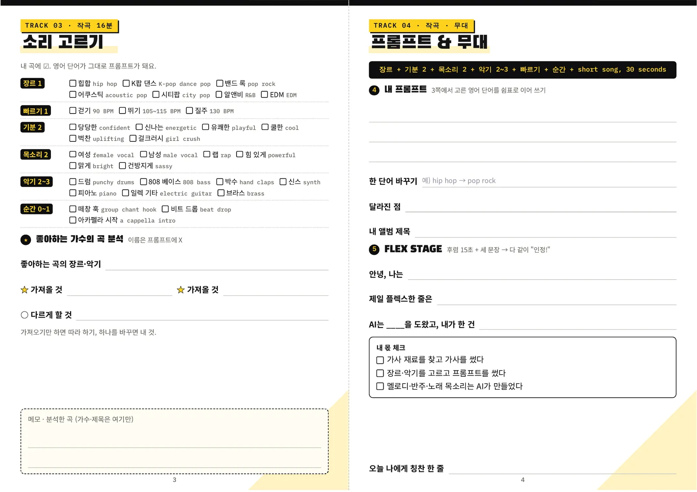
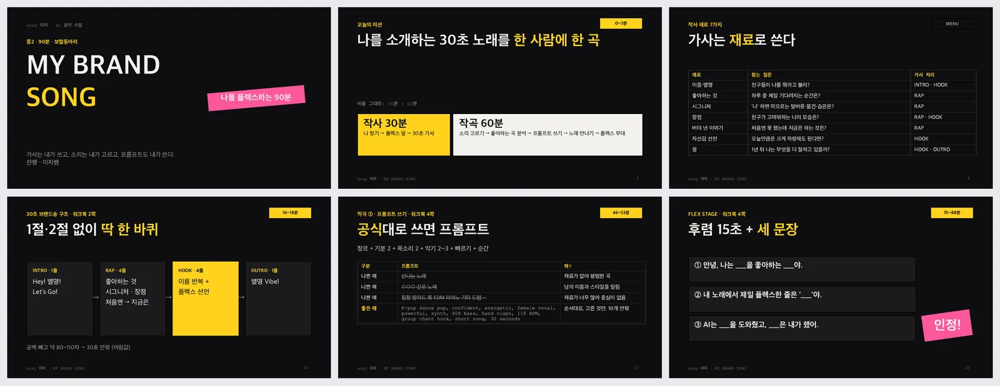

이지 자료실 · 수업자료
「나의 브랜드송 만들기」 수업자료 3종 무료 내려받기: 워크북, 수업 슬라이드, 인포그래픽
작성 · 글·자료 이지연
안녕하세요, AI융합 예술교육가 이지쌤 이지연입니다. 중학교 2학년 보컬동아리 90분 수업용으로 만든 「MY BRAND SONG(나의 브랜드송 만들기)」 수업자료 세 가지를 자료실에 올립니다. 이 글에는 워크북·수업 슬라이드·인포그래픽을 내려받는 곳과, 자료마다 담긴 내용과 수업 순서를 정리했습니다.
- 학생 한 사람이 자기를 소개하는 30초 노래를 한 곡씩 만드는 90분 수업으로, 작사 30분과 작곡 60분으로 나뉩니다.
- 워크북(PDF, 4면), 수업 슬라이드(PPTX, 21장·진행 메모 포함), 인포그래픽(PNG) 세 가지를 회원가입 없이 무료로 내려받을 수 있습니다.
- 자료는 가사 재료 찾기·가사 쓰기·장르와 악기 고르기·프롬프트 쓰기는 학생이 하고, 멜로디·반주·노래 목소리는 AI가 만드는 것으로 역할을 나눕니다.
| 수업 이름 | MY BRAND SONG · 나를 플렉스하는 90분 |
|---|---|
| 대상 | 중학교 2학년 보컬동아리(슬라이드 표기 기준) |
| 시간 | 90분 · 작사 30분, 작곡 60분 |
| 결과물 | 학생 한 사람에 나를 소개하는 30초 노래 한 곡 |
| 자료 | 워크북(PDF), 수업 슬라이드(PPTX), 인포그래픽(PNG) |
| 내려받기 | 무료 · 회원가입·로그인 없음 |
1. 자료 내려받기




2. 워크북: 4면에 담긴 것

워크북은 음반의 트랙처럼 네 면으로 나뉘어 있습니다. 앞의 두 면이 작사, 뒤의 두 면이 작곡과 무대입니다.
- TRACK 01 · 작사 15분 「나를 찾자」내 별명(본명은 쓰지 않음), 좋아하는 나(음식·장소, 놀이·아끼는 물건, 기분 좋아지는 말), 나의 시그니처, 짝이 적어 주는 잘하는 나와 단어 고르기(끈기·긍정·배려 등 14개), "처음엔 ○○ 못 했지만, 지금은 ○○" 문장, 쑥스러운 말을 노래 속 플렉스 말로 바꾸는 칸이 있습니다.
- TRACK 02 · 작사 15분 「30초 가사」INTRO 1줄 → RAP 4줄 → HOOK 4줄 → OUTRO 1줄로 1절·2절 없이 한 바퀴를 씁니다. 공백을 빼고 약 80~110자면 30초 안팎이라고 적혀 있고(어림값), 따라 부르기 쉬운 훅 공식 3가지와 가사 글자 수를 적는 칸이 있습니다.
- TRACK 03 · 작곡 16분 「소리 고르기」장르 1, 빠르기 1, 기분 2, 목소리 2, 악기 2~3, 순간 0~1개를 고릅니다. 보기마다 영어 단어(예: 힙합 hip hop, 박수 hand claps)가 붙어 있어 고른 단어가 그대로 프롬프트가 됩니다. 좋아하는 가수의 곡에서 가져올 것 2가지와 다르게 할 것 1가지를 적는 칸도 있습니다.
- TRACK 04 · 작곡·무대 「프롬프트 & 무대」"장르 + 기분 2 + 목소리 2 + 악기 2~3 + 빠르기 + 순간 + short song, 30 seconds" 공식으로 내 프롬프트를 쓰고, 단어 하나를 바꿔 본 실험, 앨범 제목, 발표용 세 문장(FLEX STAGE), 내 몫과 AI 몫 체크, 나에게 주는 칭찬 한 줄을 적습니다.
3. 수업 슬라이드: 21장 순서

슬라이드는 검은 바탕에 노란 강조색을 쓰고, 오른쪽 위에 그 장의 진행 시간이 적혀 있습니다. 워크북 몇 쪽을 쓰는 장인지도 제목 위에 표시돼 있습니다.
| 장 | 시간 | 내용 |
|---|---|---|
| 1 | — | 표지 「MY BRAND SONG · 나를 플렉스하는 90분」 |
| 2 | 0~3분 | 오늘의 미션: 나를 소개하는 30초 노래를 한 사람에 한 곡(작사 30분 : 작곡 60분) |
| 3 | — | 선생님 브랜드송 듣기: 노래 속 사람이 무엇을 자랑하는지 찾기 |
| 4~5 | 3~5분 | 시작 전 약속, 허세 플렉스와 자존감 플렉스 비교 |
| 6 | — | 작사 재료 7가지(이름·별명, 좋아하는 것, 시그니처, 장점, 버텨 낸 이야기, 자신감 선언, 꿈)와 찾는 질문·가사 자리 |
| 7~9 | 5~16분 | 탐색 ① 좋아하는 나, ② 잘하는 나(짝 인터뷰), ③ 쑥스러운 말 → 플렉스 말 |
| 10~12 | 16~30분 | 30초 브랜드송 구조, 훅 공식 3가지, 가사 쓰기와 막막할 때 3단계 |
| 13 | 30분 | PART 2 작곡 60분: "악보 몰라도 된다. 고르면 작곡이다." |
| 14 | 30~38분 | 소리 탐정: 리듬·화음·색깔, 걷기·뛰기·질주 빠르기 |
| 15 | — | 정답 공개: 선생님 브랜드송에 넣은 프롬프트 |
| 16 | 38~46분 | 좋아하는 곡 분석: 가져올 재료 2개, 다르게 할 것 1개 |
| 17 | 46~53분 | 프롬프트 쓰기: 나쁜 예 3개와 좋은 예 |
| 18 | — | 선생님 예시: 메모에서 가사 말과 스타일 말 나누기 |
| 19 | 53~75분 | 노래 만나기, 한 단어 바꾸기 실험(synth → electric guitar, 118 BPM → 90 BPM) |
| 20 | 75~88분 | FLEX STAGE: 후렴 15초 + 세 문장, 다 같이 "인정!" |
| 21 | 88~90분 | 닫기: 칭찬 한 줄, 내 몫과 AI 몫 |
21장 모두에 발표자 노트로 진행 메모가 들어 있습니다. 예를 들어 7번 노트에는 4분 타이머와 막힌 학생에게 이어서 물을 질문이, 19번 노트에는 학생 프롬프트를 고치지 않고 제출 순서대로 그대로 넣는다는 원칙이 적혀 있습니다.
3번과 14번 슬라이드에서 트는 선생님 샘플곡은 파일에 들어 있지 않습니다. 글꼴은 맑은 고딕과 Courier New를 쓰며, 맑은 고딕이 없는 컴퓨터에서는 다른 글꼴로 바뀌어 보입니다.
4. 인포그래픽: 한 장으로 보는 90분
인포그래픽은 수업을 네 구간으로 나눠 보여 줍니다. 시작(0~5분)은 허세 플렉스와 자존감 플렉스, 안전한 창작 규칙, 훅 공식 3가지입니다. PART 1(5~30분)은 가사 재료 7가지와 30초 브랜드송의 4단계 구조, PART 2(30~53분)는 리듬·화음·색깔·속도로 듣는 소리 탐정과 AI 음악 프롬프트 공식, PART 3(53~90분)은 한 단어 바꾸기 실험과 FLEX STAGE 발표입니다.
AI가 그린 이미지라 그림 속 글자 일부가 바르게 나오지 않았습니다. 예를 들어 '피터노'는 피아노, 걷기 빠르기 '~60'은 워크북과 슬라이드에 약 90 BPM으로 적혀 있습니다. 수업 내용과 숫자는 워크북과 슬라이드를 기준으로 합니다.
5. 자료에 담긴 수업 약속
슬라이드 4번과 워크북에는 수업 시작 전에 함께 읽는 약속이 들어 있습니다.
- 개인정보 약속본명·학교·동네는 가사에 넣지 않고 별명은 씁니다. 친구 이야기는 물어보고 씁니다.
- 건강한 플렉스 약속남과 비교하지 않고 어제의 나와 비교하며, 남을 깎아내리지 않습니다. 돈·명품·외모가 아니라 태도·노력·취향을 자랑합니다.
- AI에 넣지 않는 것가수 이름·음원·가사는 AI에 넣지 않고, 좋아하는 곡에서는 장르·악기 같은 재료 목록만 가져옵니다. 가수 이름과 곡 제목은 워크북 메모 칸에만 씁니다.
- 만든 노래 나누기마지막 슬라이드 노트에는 수업과 가족에게 들려주는 것은 괜찮고, SNS나 수익 채널에 올릴 때는 먼저 상의한다고 적혀 있습니다.
참고 자료
세 자료는 이지연(ezsy 이지)이 만든 수업자료입니다. 워크북과 수업 슬라이드는 배포용으로 정리한 파일이고, 인포그래픽은 Gemini Notebook으로 만든 AI 생성 이미지입니다. 자료를 AI와 함께 준비한 과정은 위 블로그 글에 적었습니다. 파일 크기와 쪽수는 2026년 10월 30일 올린 파일 기준입니다.
함께 읽을 글